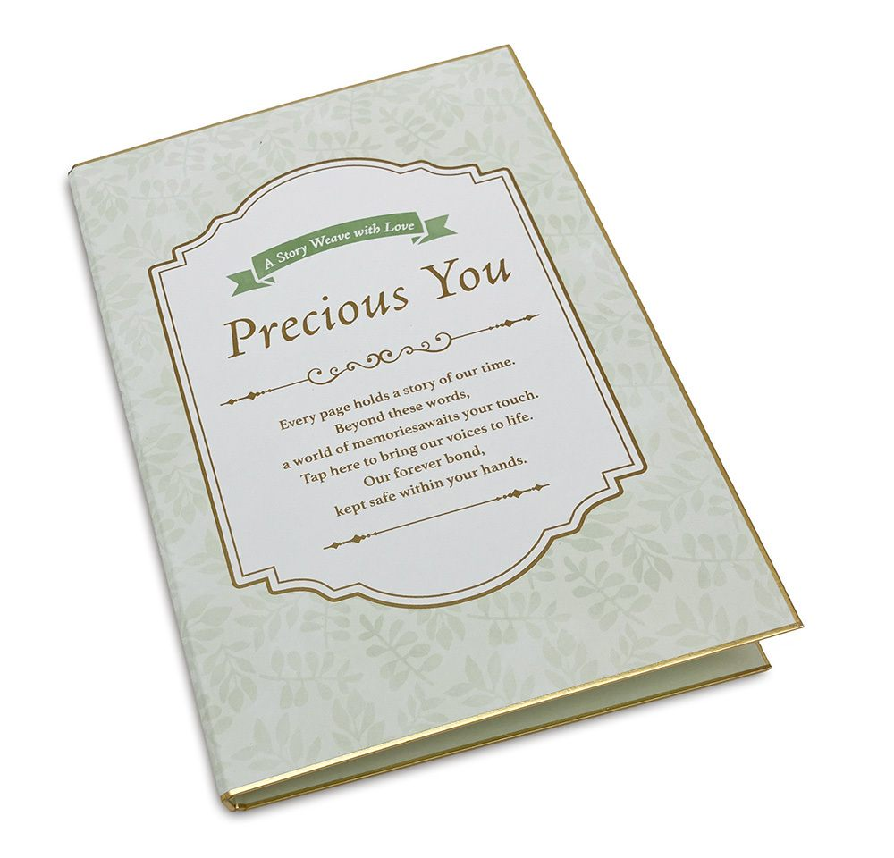
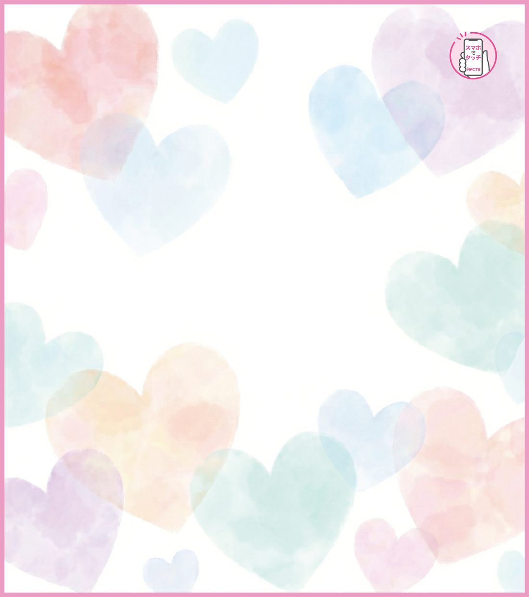
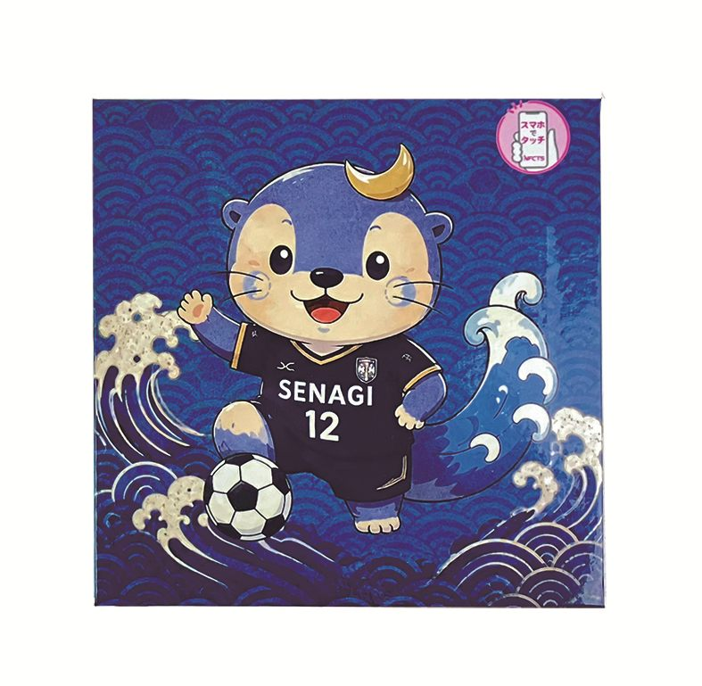
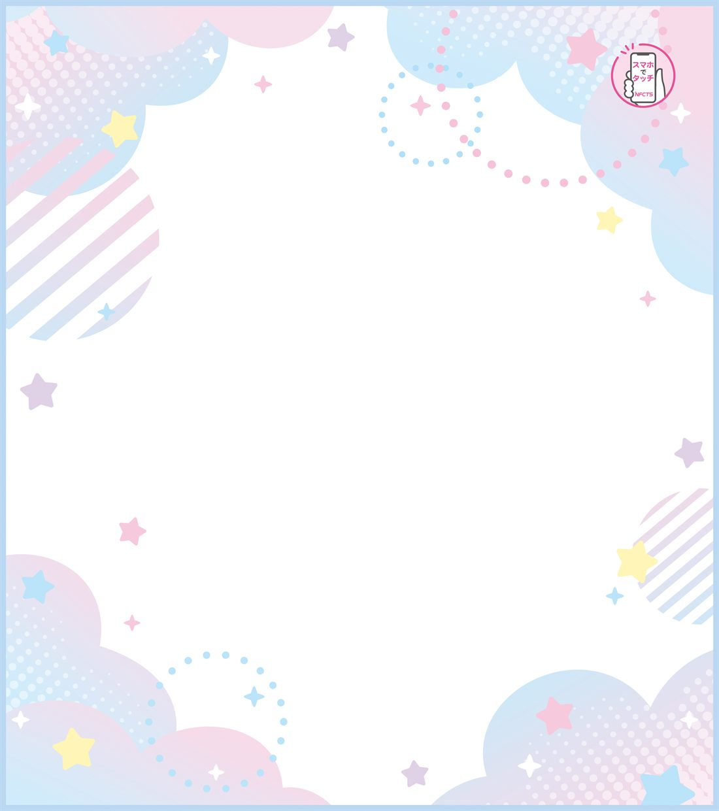
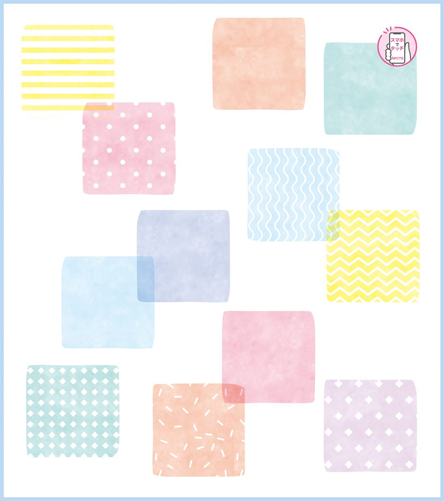
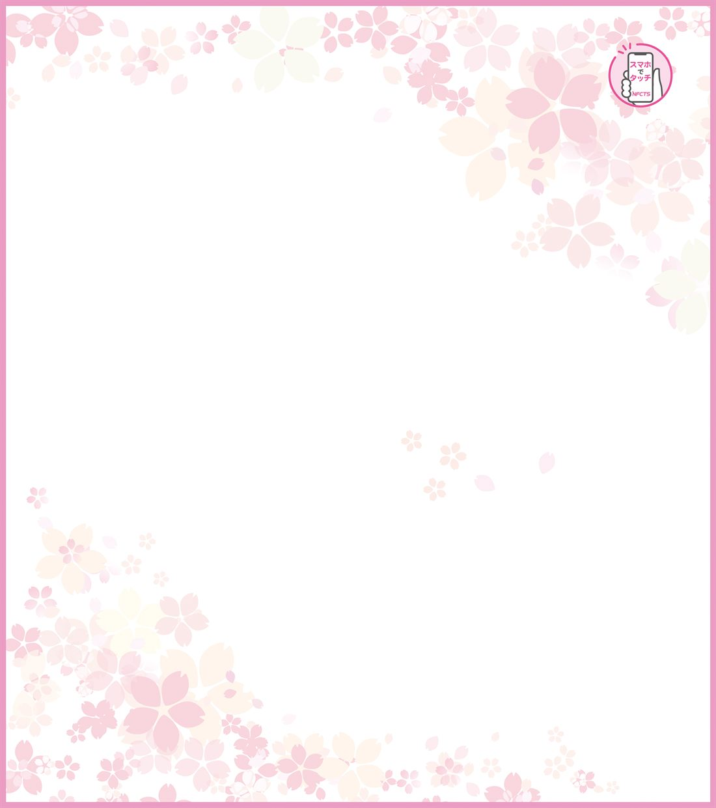

かんたんログインで、自分だけのコンテンツをすぐに作れる個人向けシステムです。
NFC-TS Lite は、個人での利用を念頭に開発されたシステムです。むずかしい設定は不要で、スマートフォンからかんたんにログインし、写真アルバム・動画メッセージ・プロフィール（デジタル名刺）などの自分のコンテンツを直感的に作成できます。UI/UXは、はじめての方にもやさしい設計です。NFCタグ入りの和小物・カードは1個からご注文でき、お手持ちのタグにも紐付けできます。「まずは自分用に1つ」から、気軽にはじめられます。
NFC-TS Lite に対応した、NFCタグ入りの和小物が登場します。スマホをかざすと、写真や動画メッセージが立ちあがります。

本のように開く、ブック型の色紙。めくる特別感に、NFCで動画やアルバムを添えられます。

273×242mmの大判色紙。クラス・部活・サークルの寄せ書きに。NFCタグは右上に配置。卒業・送別・誕生日のメッセージに。

フレーム付きの朱印帳とマグネットフレーム。記念の御朱印や写真を飾りながら、NFCで思い出を重ねられます。
NFC大色紙は、用途に合わせて選べる4デザイン。



※ 価格・発売日は準備中です。確定し次第、順次掲載します。
スマホひとつで、自分だけのコンテンツを。
思い出の写真をまとめて、かざすだけで見られるアルバムに。記念日や旅の思い出を、和小物に宿せます。
大切な人へのメッセージ動画を、色紙やカードに添えて。手渡しのギフトが「動く贈り物」になります。
連絡先やSNSをまとめたプロフィールを作成。かざすだけで、相手のスマホに表示・共有できます。
スマホひとつで、はじめられます。実際の操作画面とあわせてご案内します。
メールアドレスなどで登録し、すぐにログイン。アプリのインストールは不要で、スマホのブラウザから利用できます。
写真アルバム・動画メッセージ・プロフィールなど、自分のコンテンツを直感的に作成・編集します。
作成したコンテンツを、お手持ちのNFCタグ（和小物・カード等）に紐付けて公開します。
スマホをかざすだけで、作ったコンテンツが表示されます。家族や友人と、思い出やメッセージを共有できます。
※ 各ステップのスマホ画面キャプチャは準備中です。実際の操作画面は、用意でき次第ここに掲載します。
NFCタグ入りの和小物・カードは 1個からご注文OK
個人のお客様も1個から。専用アプリは不要で、クラウドのデータ保管は2年間無料です。
商品ごとの価格・数量別のタグ単価は、料金ページでご確認いただけます。
専用アプリは必要ですか？
不要です。iPhone・Androidの標準機能で、スマホをかざすだけで表示できます。コンテンツの作成・編集もスマホのブラウザから行えます。
1個だけでも購入できますか？
はい、1個からご注文いただけます。「まずは自分用に1つ」から、気軽にお試しいただけます。
作った内容は後から変えられますか？
変えられます。タグはそのままで、表示する写真・動画・メッセージをクラウドからいつでも更新できます。
どんなスマホでも読み取れますか？
NFC対応のスマートフォン（近年のiPhone・Android）でかざすだけで読み取れます。専用アプリのインストールは不要です。
導入のご相談・ご不明な点は、お気軽にお問い合わせください。
法人で大量のタグを運用する場合は、NFC-TS Business をご覧ください。
お電話でも承ります 075-661-3141（平日 9:00〜18:00）